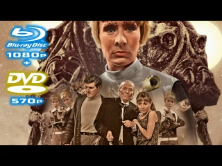
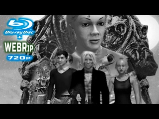
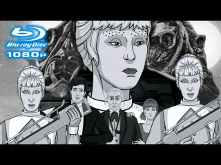
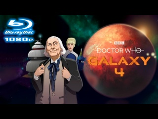
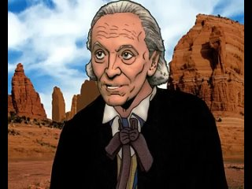
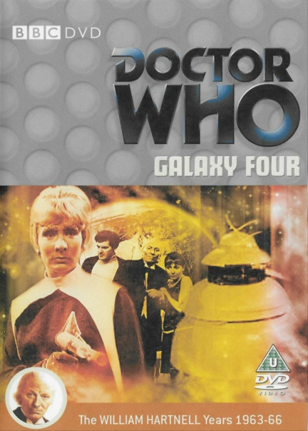
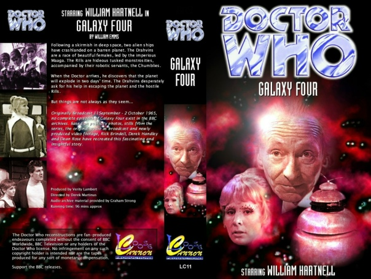
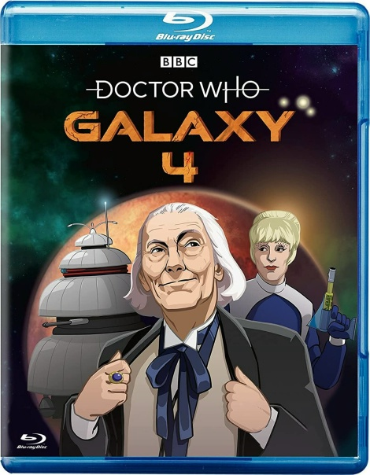
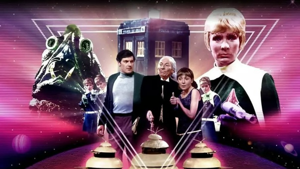
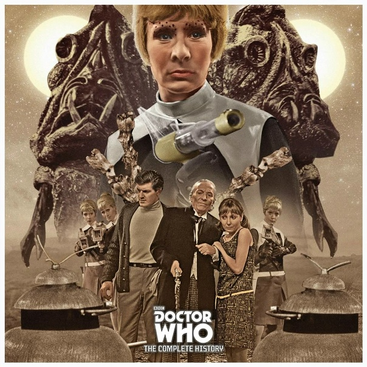

+ Реконструкция (эпизоды 1, 2, 4) Субтитры: Русские и Английские |  |
|---|---|
+ Фанатская AI-реконструкция (эпизоды 1, 2, 4) Йен Ливайн Субтитры: Русские и Английские | |
+ Фанатская CGI анимация (эпизоды 1, 2, 4) WhoRecons Субтитры: отсутствуют |  |
+ Черно-белая анимация в соотношении сторон 4:3 (эпизоды 1, 2, 4) Субтитры: Русские и Английские |  |
Субтитры: Русские и Английские |  |

| 1. Четыреста рассветов 2. Стальная ловушка 3. Воздушный шлюз 4. Взрывающаяся планета | Изначально все эпизоды утеряны * 3-й эпизод найден в 2011 году - 16mm t/r * Имеется реконструкция утраченных (1, 2 и 4) эпизодов * Имеется ч/б и цветная анимация всех эпизодов |
|---|
|
«Галактика 4» переносит команду в эпицентр космической катастрофы: планета разрушается, а две враждующие расы — дравины и риллы — вынуждены делить последний шанс на спасение. Доктор пытается примирить врагов и найти способ улететь до гибели мира, но время стремительно тает. Серия показывает, как страх и недоверие могут погубить даже тех, кто стоит перед общей угрозой, и ставит героев перед тяжёлым выбором между долгом и состраданием.
 DVD (один эпизод) - 11 марта 2013 |  LC recon |  Анимация Blu-ray - 01 марта 2022 * Версия в нашей группе |
|---|

